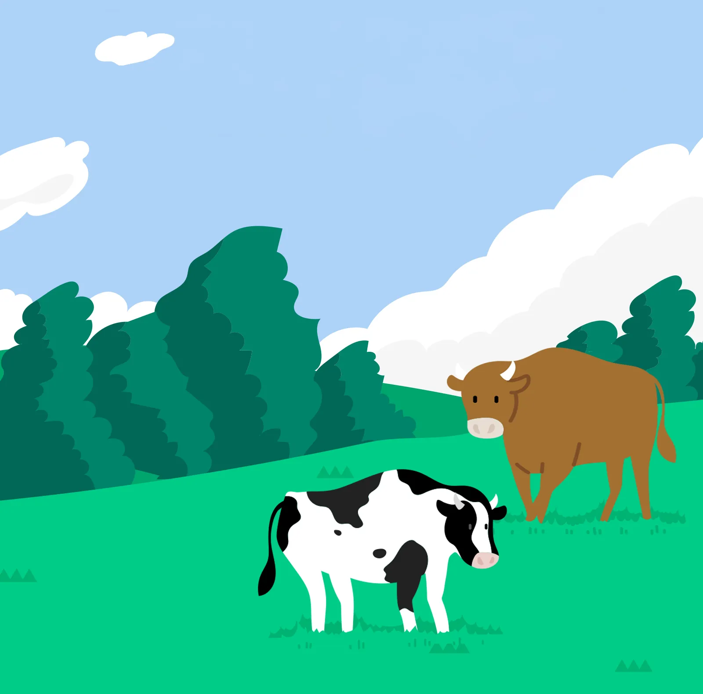
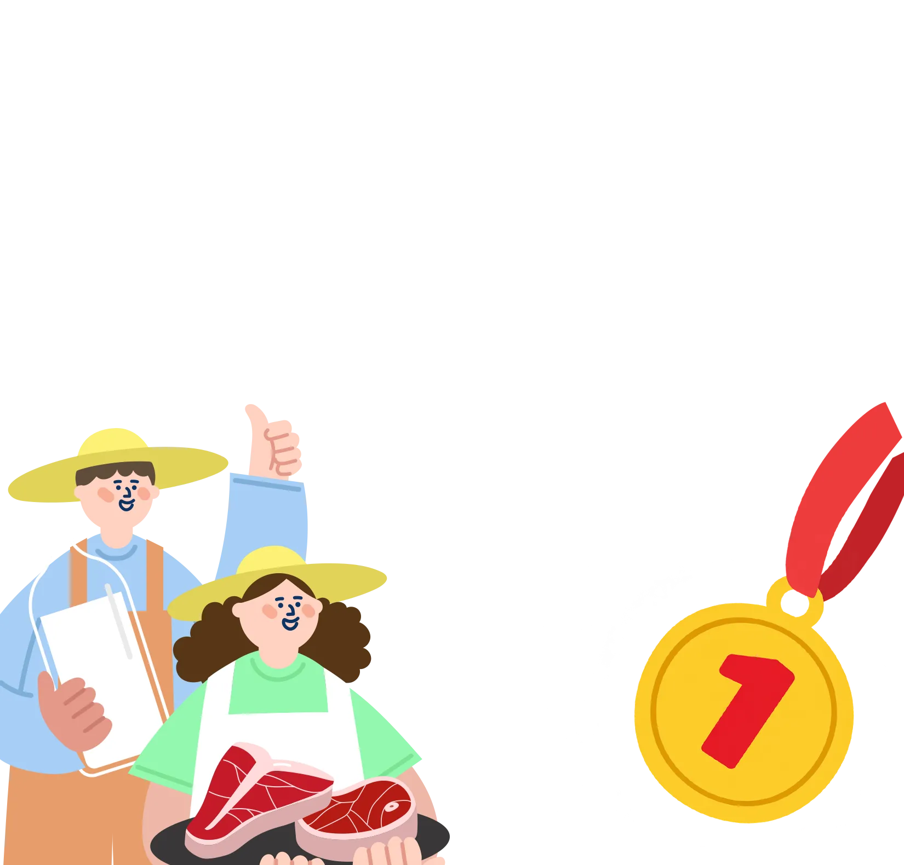
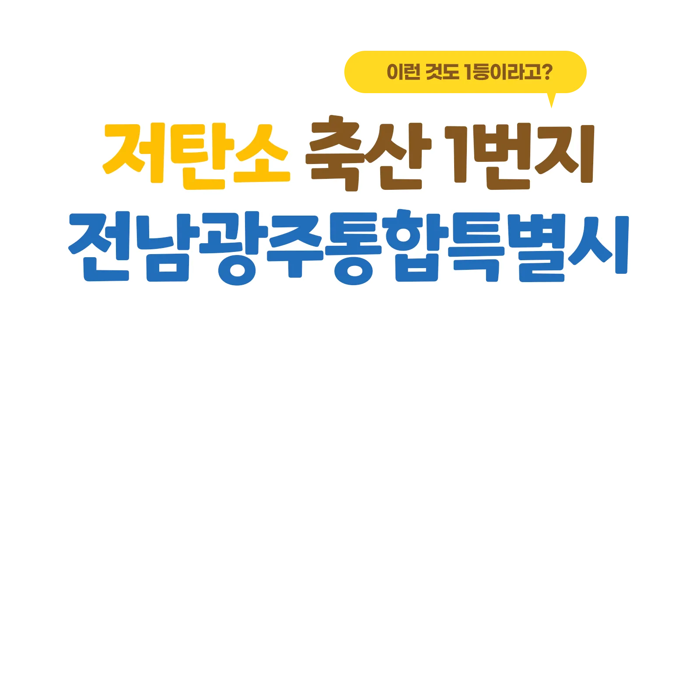
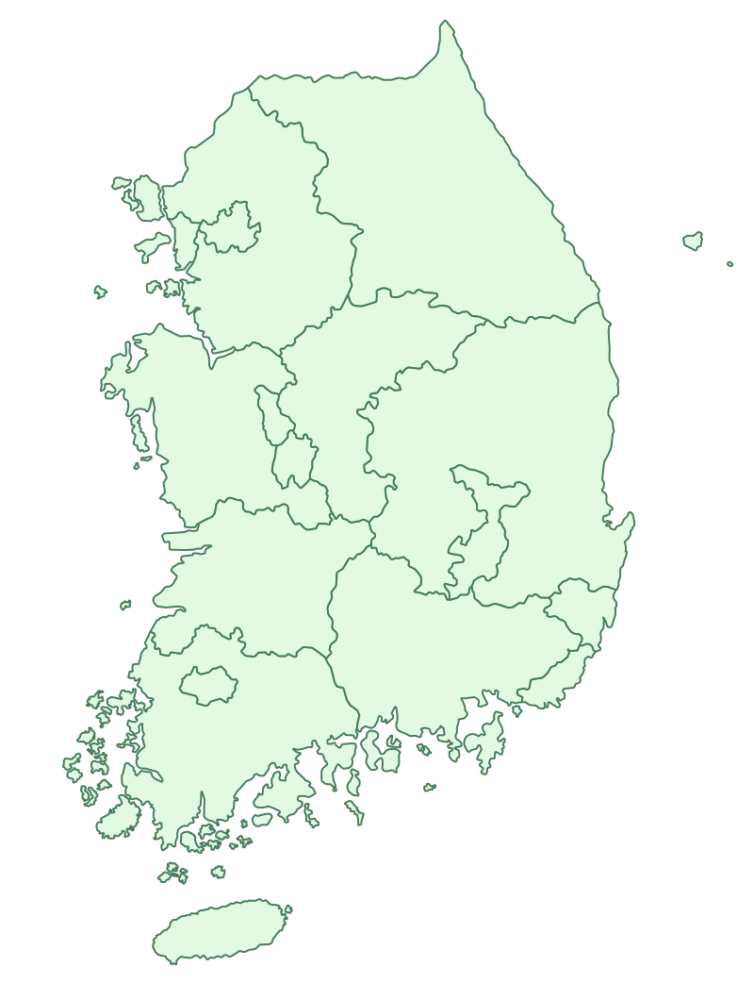
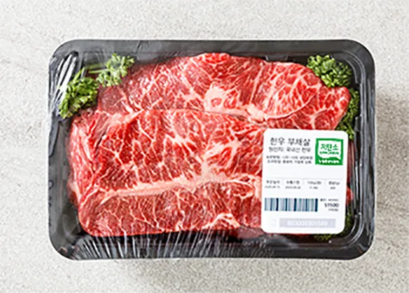

이런 것도 1등이라고?
저탄소 축산 1번지
전남광주통합특별시
우리가 자주 먹는 삼겹살, 한우, 우유를 생산하며 지구의 열을 식히는 착한 농장들이 있습니다. 그것도 전남광주통합특별시에 가장 많이요! 무려 4년 연속 전국 1위랍니다. 전국 저탄소 축산물 농가 4곳 중 1곳이 여기 있어요. 전남광주통합특별시에.
저탄소 축산물 인증제
저탄소 축산물 인증제란?
아무 농장이나 받을 수 없는, 깐깐한 ‘친환경+탄소감축’ 국가 인증이에요.
- 기본 자격
- 이미 유기축산물, 무항생제, HACCP(해썹) 등 국가인증을 받은 깨끗한 농장이어야 합니다.
- 인증 핵심
- 사료 조절(사양관리), 가축분뇨의 올바른 처리, 농장 에너지 절감 등을 통해 온실가스 배출량을 평균보다 10% 이상 줄이면 축산물품질평가원이 심사를 거쳐 인증합니다.
4년 연속 전국 1위
어떻게 4년 연속 1위가 가능할까?

- 강원16
- 인천1
- 경기189
- 충북9
- 경북37
- 충남156
- 세종4
- 대구2
- 전북84
- 울산4
- 경남104
- 부산1
- 전남광주219
- 제주25
전남광주통합특별시의 축산 농가들이 직접 발로 뛰며 땀 흘려 만든 결과예요. 사양관리 개선, 가축분뇨 적정처리, 에너지 절감 등 탄소 감축 활동에 적극 참여했기 때문이죠!
올해는 무려 80호의 농가가 새롭게 인증을 받았는데요, 전국 저탄소 축산물 인증농가의 26%가 전남광주의 농가랍니다.
숫자로 보는 인증 현황
전남광주 저탄소 축사 인증,
숫자로 살펴볼까요
- 누적 인증 농가
- 219호
- 신규 인증 농가
- 80호신규 인증 전국 1위
- 인증 비율
- 26%전국 851호 중
축종별 인증 현황
- 돼지 126호
- 한우 67호
- 젖소 26호
신규 인증 농가
신규 인증 전국 1위- 돼지 52호
- 젖소 17호
- 한우 11호
지역별 신규 농가
- 나주15호
- 무안14호
- 함평·화순각 9호
- 장흥·영암각 6호 등
저탄소 인증마크
저탄소 인증을 받은 제품, 뭐가 좋을까?

저탄소 인증 농가에서 생산한 제품에는 포장 판매 시 ‘저탄소’ 인증마크가 부여되는데요, 저탄소 인증 마크를 받은 제품은 이런 장점이 있어요.
-
온실가스를 줄인 농장 제품을 구분할 수 있어요
인증 농장은 같은 축종 평균보다 온실가스를 10% 이상 줄인 곳이에요. 마크 하나로 저탄소 농장에서 나온 고기와 우유를 알아볼 수 있어요.
-
이력까지 확인할 수 있어요
소고기와 돼지고기는 축산물이력제 앱이나 웹에서 이력번호로 저탄소 인증 정보를 조회할 수 있답니다.
-
기본 관리 수준이 확인된 농장이에요
인증을 받으려면 HACCP, 무항생제, 유기축산, 깨끗한 축산농장 같은 위생·안전·환경 국가인증을 1개 이상 갖고 있어야 해요. 농장 관리 능력과 탄소 감축 기술 적용도 요건이죠. 믿고 먹을 수 있다는 뜻!